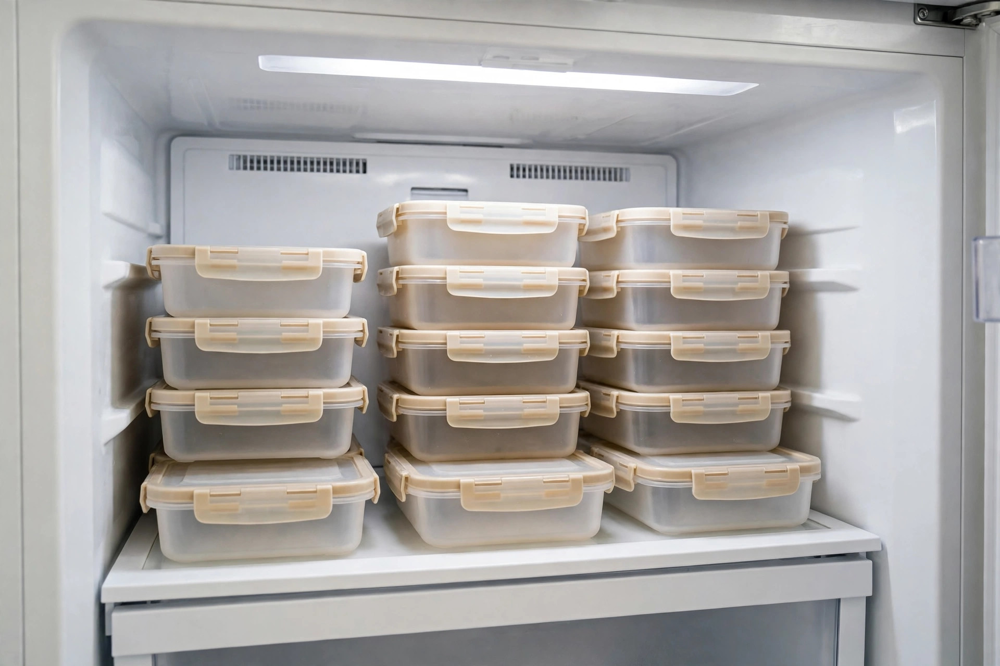

入る食数は、容器の高さと底面積で決まる

冷凍弁当が冷凍庫に入らない問題は、食数ではなく容器の大きさで起きます。公式に容器の寸法が出ているのは4社分で、同じ10食でも必要な容量は約6.2Lから約13.4Lまで開きます。冷凍室の容量と、今どれくらい埋まっているかを入れると、サービスごとに入る食数の目安が出ます。
空き容量 L の場合、入る食数の目安です。
| サービス | 容器1食の体積 | 入る食数の目安 | 積み重ねの高さ（10食） |
|---|
計算の前提：容器の体積は公式の寸法（底面積×高さ）から算出。冷凍室の形や仕切りで実際は前後するため、目安として書いています。寸法が公式に出ていないサービスは計算の対象に入れていません。
入らない場合の選択肢
計算で足りない場合、順番は次のとおりです。1回の食数を減らす、配送の頻度を上げる、容器の薄いサービスへ替える、それでも足りなければ保存が冷蔵の作り置き惣菜へ切り替える。冷凍庫を買い足す話は最後で、その前に単価と送料がどう変わるかを価格記録で見られます。
編集部の見方
冷凍庫の問題は申し込んだ後に分かることが多いため、このサイトでは容量の計算を申し込みより前に置いています。容器の高さは公式の数字だけで比べられる項目で、味や満足度のような個人差のある項目より先に決められます。
出典：nosh 公式サイト（容器 横18cm×縦16.5cm×高さ4.5cm）、まごころケア食公式サイト（高さ3.05cm）、ウェルネスダイニング公式サイト（高さ3cm）、ワタミの宅食ダイレクト公式サイト（三菜 高さ約2.6cm）。いずれも2026年11月26日確認。このページには広告を含みません。